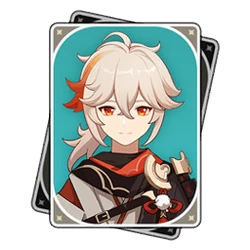
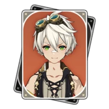
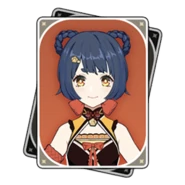
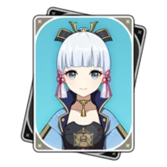

Como funcionam os Times?
Os times são formados por 4 personagens, muitas das vezes, são personagens que possuem sinergias uns com os outros, e, como o jogo nos trás diversas possibilidades pela grande quantidade de personagens, podemos ter times para cada situação do jogo. O abismo é o end-game de Genshin Impact, onde você acha diversos montros poderosos que para passar irão depender da força de seus pesonagens e da sinergia que seu time possui para poder concuí-los.
Esses são os times que geralmente uso e que para mim, funciona em quase todos os lugares do jogo.
Time de Exploração |
|||
|---|---|---|---|
|  |  | ||
Geralmente usado na exploração do mundo, onde facilmente posso pegar recursos com as habilidades da Nahida, agrupar os inimigos com Kazuha, além de dar atributos ao time, Bennett serve como curandeiro e aumenta o ataque do time, e a Raiden Shogun consegue matar qualquer um. Kazuha também é utilizado como meio de subir em lugares difíceis e a Raiden como bateria do time para nunca ficar sem ultimate. |
Nacional Raiden |
|||
|---|---|---|---|
|  | |||
Nacional é um time bem conhecido, ele é composto por Xiangling, Xingqiu e Bennett, podendo adicionar outro personagem, nesse caso com a Raiden Shogun, além de diversas reações que possíbilitam danos altíssimos, a ultimate da Raiden faz com que todos sempre tenham ultimate, o que faz esse time ser um dos mais fortes do jogo. |
Hu Tao Dps |
|||
|---|---|---|---|
Esse time foca exclusivamente em fazer a Hu Tao ter seu potencial despertado ao máximo, afinal, ela é uma personagem que se mantém com pouca vida por conta de suas habilidades, então usamos o melhor escudo do jogo, o Zongli, junto do Albedo para dar dano adicional e ter uma reação por serem do mesmo elemento, e o Xingqiu serve com suporte para que a Hu Tao tenha suas reações com Hydro e tenha seu dano aumentado. |
Ayato Speed Dps |
|||
|---|---|---|---|
Esse time foca exclusivamente em fazer o Ayato um dps extremamente veloz e poderoso, afinal, o kazuha irá dar um bônus de dano elemental a ele, assim como juntar os inimigos, o bennett irá aumentar seu ataque e a yunjin sua velocidade de ataque, e com sua habilidade, ele pode atacar diversas vezes com danos bem altos. |
Ayaka Melt |
|||
|---|---|---|---|
|  | |||
Um time extremamente poderoso, focado em fazer a Ayaka ter danos com as reações entre cryo e pyro, afinal, o kazuha irá dar um bônus de dano elemental pra ela e juntar os< inimigos, a Xiangling irá aplicar pyro nos inimigos e o bennett trazendo um aumemto de ataque, fazendo assim a Ayaka ter danos altíssimos em sua ultimate. |